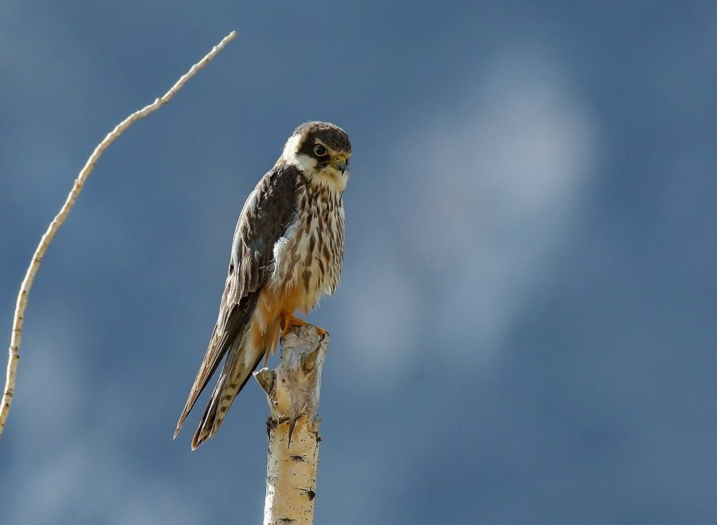

मोरसिस्सानीEurasian Hobby
Falco subbuteo · Falconidae · BRD-0362

- Scientific name वैज्ञानिक नाम
- Falco subbuteo Linnaeus, 1758
- Family कुल
- Falconidae
- Hindi हिंदी
- मोरसिस्सानी
- Local names स्थानीय नाम
- eurasian hobby, hobby, morcissani
- Status here यहाँ की स्थिति
- native
- Movement आवागमन
- Migrant
- Known from कहाँ दर्ज
- Others have published records from the Basti–Ayodhya districts बस्ती–अयोध्या के ज़िलों से दूसरों के प्रकाशित अभिलेख
- IUCN IUCN
- LC
- Review समीक्षा
- not yet reviewed
When to look कब देखें
Migrant प्रवासी. Expected mainly in May, October. मुख्यतः मई, अक्टूबर में अपेक्षित।
Breeds across Eurasia east to Japan; recorded breeding in the Himalayas in Kashmir and near Simla (Baker 1928). GBIF records in Uttar Pradesh fall in May and October. All migrants and visitors →
Tell it apart from इनसे अलग पहचानें
मोरसिस्सानी / Eurasian Hobby
Falco subbuteo Linnaeus, 1758 — Falconidae
मोरसिस्सानी — खुले वनों और पेड़ों के झुरमुटों में रहने वाला एक छोटा और अत्यंत तेज उड़ने वाला बाज़। बेकर (1928) के अनुसार इसकी पीठ स्लेटी-धूसर होती है, गालों पर चौड़ी काली मूंछ जैसी पट्टी और गले पर साफ सफेद रंग होता है। नीचे का हिस्सा सफेद और काली धारियों से भरा होता है, जबकि जांघें लाल-कत्थई होती हैं। यह हवा में उड़ते हुए बड़े कीड़े, चमगादड़ और छोटे पक्षी पकड़ता है।
Quick Identification त्वरित पहचान
| Feature | Description |
|---|---|
| Habit | Small, compact, exceptionally swift aerial falcon of well-wooded country |
| Upperparts | Slaty-grey, darkest on head and upper back, paler on lower back and rump (Baker 1928, p. 42) |
| Head Pattern | Blackish-slate cheeks, ear-coverts, and broad moustachial stripe contrasting with white chin and throat (Baker 1928, p. 42) |
| Underparts | White tinged with rufous on lower abdomen and flanks, broadly streaked throughout with black (Baker 1928, p. 42) |
| Thighs & Vent | Thighs and under tail-coverts unstreaked rich rufous (Baker 1928, p. 42) |
| Soft Parts | Iris hazel to deep brown; bill pale slate with black tip; cere and orbital skin greenish-yellow; legs orange (Baker 1928, p. 42) |
Field tip: Look for a small falcon showing a broad blackish-slate moustachial stripe against a white throat and unstreaked rusty-red thighs (Baker 1928, p. 42).
हिंदी:
स्लेटी-धूसर पीठ, गले पर साफ सफेद रंग, गाल पर चौड़ी काली मूंछ और जांघों पर लाल-कत्थई रंग देखकर इसे पहचाना जा सकता है (बेकर 1928)।
Morphology आकारिकी
Measurements as given by Baker (1928):
| Measurement | Range |
|---|---|
| Biometrics | Wing, 245 to 265 mm., $ 273 to 280 mm.; tail, <$ 129 to 142 mm., $ 146 to 148 mm. ; tarsus about 30 to 35 mm. ; culmen 17 to 18 mm. (Baker 1928) |
Stuart Baker (1928, p. 42) described the adult plumage: "Upper parts slaty-grey, darkest on the head and upper back, palest on the lower back, rump and upper tail-coverts, the feathers of these parts black-shafted : outer tail-feathers barred on the inner webs with darker slate and dull rufous-grey ; a collar on the hind-neck white, sometimes tinged with rufous ; primaries and outer secondaries almost black with a fine edging of whitish ; inner webs with half-bars of dull rufous ; round the eye, cheeks, ear-coverts and a broad moustachial stripe blackish-slate ; forehead, lores and a small supercilium whitish ; chin, throat, front and sides of neck pure white; thighs and under tail-coverts rufous , remainder or lower parts white, more or less tinged with rufous, especially on the lower abdomen and flanks, and broadly streaked throughout with black."
Colours of soft parts: iris bright hazel to deep brown; bill pale slate with black tip and sometimes a yellowish tinge at the base of the lower mandible; cere and orbital skin greenish-yellow; legs orange, claws black (Baker 1928, p. 42).
हिंदी:
बेकर (1928) के अनुसार नर के डैने 245 से 265 मिमी और मादा के 273 से 280 मिमी होते हैं। पूंछ 129 से 148 मिमी, टार्सस 30 से 35 मिमी और चोंच 17 से 18 मिमी होती है। पैर नारंगी और चोंच स्लेटी व काली होती है।
Behaviour & Ecology व्यवहार और पारिस्थितिकी
Stuart Baker (1928, p. 43) noted: "The Hobby is a bird of well-wooded country living principally on small birds, bats and the larger insects. Its flight is very powerful and swift and in character very like that of the Peregrine. It has been recorded as catching Swifts on the wing on several occasions and it frequently captures dragonflies and the quickest flying butterflies, etc."
Baker (1928, p. 43) observed: "When not busy feeding their young they are rather crepuscular in their habits, hawking principally in the mornings and evenings."
हिंदी:
बेकर (1928) के अनुसार यह पेड़ों वाले इलाकों में रहता है और इसकी उड़ान बहुत तेज व शक्तिशाली होती है। यह सुबह और शाम के समय हवा में उड़ते हुए कीड़े, चमगादड़ और छोटे पक्षी पकड़ता है।
Life Cycle / Phenology जीवन चक्र
Baker (1928, p. 43) recorded that the nominate Hobby breeds in Europe and northern Asia "during June, generally in the first half of that month, depositing its eggs in old nests of Crows, Magpies or Herons, occasionally in a Rook's nest or in a squirrel's drey." The Central Asian race centralasiae breeds in the Himalayas from Murree and Kashmir to Simla (Baker 1928, p. 44).
In Uttar Pradesh, the species does not breed; GBIF records fall in May and October.
हिंदी:
बेकर (1928) के अनुसार यह जून में पुराने घोंसलों में अंडे देता है। यह उत्तर प्रदेश के मैदानी भागों में प्रजनन नहीं करता, केवल प्रवास के दौरान मई और अक्टूबर में दिखाई देता है।
Host Plants or Prey आहार
Stuart Baker (1928, p. 43) recorded the diet: "living principally on small birds, bats and the larger insects... It has been recorded as catching Swifts on the wing on several occasions and it frequently captures dragonflies and the quickest flying butterflies, etc."
हिंदी:
बेकर (1928) के अनुसार इसका भोजन मुख्य रूप से हवा में उड़ने वाले कीड़े जैसे व्याध पतंग और तितलियां, चमगादड़ तथा छोटे पक्षी हैं।
Predators / Natural Enemies शत्रु
No source opened for this atlas names a specific predator of this bird.
हिंदी:
इस एटलस के लिए खोले गए किसी भी स्रोत में इस बाज़ के किसी विशिष्ट शिकारी का उल्लेख नहीं है।
Agricultural / Human Relevance कृषि प्रासंगिकता
Stuart Baker (1928, p. 43) recorded historical falconry use: "It is a very bold courageous bird and in former time was much used for hawking thrushes, larks, pipits and other small birds." No source opened for this atlas describes damage to agriculture. Protected under the Wildlife (Protection) Act, 1972.
हिंदी:
पुराने समय में इसका उपयोग छोटे पक्षियों के शिकार के लिए बाज़दारी में किया जाता था (बेकर 1928)। यह वन्यजीव (संरक्षण) अधिनियम, 1972 के तहत संरक्षित है।
Expected Locally स्थानीय रूप से अपेक्षित
Not a field record. Written from published accounts for eastern Uttar Pradesh. No confirmed local sighting yet — if you have seen it, that is what the atlas needs.
अभी तक स्थानीय पुष्टि नहीं। यह विवरण प्रकाशित स्रोतों से है, किसी अवलोकन से नहीं।
GBIF holds published records from these districts.
In the core districts, there is one eBird record from Faizabad on 5 October 2021. In the wider Awadh–Purvanchal plain, published records come from Lucknow (six records), Bahraich (two records), Lakhimpur Kheri (one record), and Unnao (one record), reported by nine observers between 2014 and 2025 during May and October.
A first record would be a photograph with place and date, sent through the About page.
Distribution वितरण
Global range: Baker (1928, p. 43) gave the distribution: "Europe and Asia, East to Japan ; South in Winter to Africa, India and China."
In India: Baker (1928, p. 43) noted: "undoubtedly a very large number of our Indian cold weather birds cannot be distinguished from the European typical race." The form centralasiae breeds at Murree, in Kashmir and near Simla (Baker 1928, p. 44).
In Uttar Pradesh: Published records are scattered across Lucknow, Bahraich, Lakhimpur Kheri, Unnao, and Faizabad, falling in May and October.
In Basti district / eastern UP: GBIF holds one eBird record from Ayodhya (Faizabad) district (5 October 2021) and none from Basti; the others nearest are in Bahraich and Lucknow.
हिंदी:
बेकर (1928) के अनुसार इसका विस्तार यूरोप और एशिया में जापान तक है तथा सर्दियों में यह भारत आता है। उत्तर प्रदेश में इसके रिकॉर्ड लखनऊ, बहराइच, लखीमपुर खीरी, उन्नाव और फैजाबाद से हैं।
Research Questions शोध प्रश्न
- What flight paths do Eurasian Hobbies follow across the Ghaghara basin during their autumn passage in October? / अक्टूबर के महीने में घाघरा नदी घाटी से गुजरते समय इनके प्रवास के रास्ते क्या हैं?
- Does the passage window of hobbies coincide with peak dragonfly swarms over eastern Uttar Pradesh wetlands? / क्या पूर्वी उत्तर प्रदेश के नम क्षेत्रों में व्याध पतंगों की संख्या बढ़ने के समय ही यह बाज़ यहां से गुजरता है?
- Which tree species provide favoured nocturnal roosting sites for passage falcons in suburban Lucknow and Faizabad?
- How frequently do migrant hobbies prey on microchiropteran bats emerging at dusk around old brick kilns?
- Can local village watchers identify the dark moustache and rufous thighs of this falcon during October evening flights? (An observer with binoculars can scan woodland edges at dusk without specialized equipment.)
Similar Species मिलती-जुलती प्रजातियाँ
| Species | How to tell apart | हिंदी | |
|---|---|---|---|
| [[peregrine_falcon | Peregrine Falcon]] (Falco peregrinus) | Much larger and heavier; broad black moustachial stripe; barred underparts rather than heavily streaked; powerful swift flight (Grimmett et al. 2011) | शाहीन |
| [[red_necked_falcon | Red-necked Falcon]] (Falco chicquera) | Distinctive bright rufous crown and nape, white cheeks with narrow dark moustachial line, closely barred underparts (Grimmett et al. 2011) | तुरुमती |
| [[common_kestrel | Common Kestrel]] (Falco tinnunculus) | Pointed wings, habit of hovering stationary in mid-air over open fields; rufous-brown mantle with black spots (Grimmett et al. 2011) | केस्ट्रेल |
Field rule: The slaty-grey upperparts, bold black moustache contrasting with clean white throat, heavily streaked underparts, and rich rufous unstreaked thighs distinguish the Eurasian Hobby (Baker 1928, p. 42).
हिंदी:
शाहीन काफी बड़ा और नीचे से धारियों वाला होता है; तुरुमती का सिर लाल होता है; मोरसिस्सानी की पीठ स्लेटी, सीना धारीदार और जांघें लाल-कत्थई होती हैं।
Taxonomy & Classification वर्गीकरण
Original description. Described by Carl Linnaeus in 1758 in Systema Naturae (10th ed., Vol. 1, p. 89), under the binomial Falco subbuteo, with the type locality given as Sweden.
Subspecies. Baker (1928, pp. 42–44) treated the typical race Falco subbuteo subbuteo alongside the paler and slightly larger Central Asian race centralasiae Buturlin, 1911, and noted that cold-weather visitors to northern India cannot always be separated with certainty.
Family and order placement. Order Falconiformes, family Falconidae (falcons and caracaras), genus Falco.
IUCN status rationale. Evaluated as Least Concern (LC) on the IUCN Red List (BirdLife International 2021).
हिंदी:
लिनिअस ने 1758 में स्वीडन से इसका वर्णन किया था। यह फाल्कोनिडी कुल का सदस्य है और प्रकृति संरक्षण संघ की रेड लिस्ट में संकट-मुक्त (LC) श्रेणी में है।
Photo Gallery फोटो गैलरी
No photos yet — add field photos to media/species/eurasian_hobby/ and run node scripts/sync_photos.js.
Photos needed आवश्यक फोटो
- [ ] Adult perching upright on a bare branch showing rufous thighs and dark moustache (सूखी डाली पर बैठा वयस्क जिसमें लाल जांघें और काली मूंछ दिखे)
- [ ] Flight view from below displaying pointed wings and streaked underparts (उड़ान में नीचे से दृश्य जिसमें नुकीले डैने और धारीदार सीना दिखे)
References संदर्भ
- Linnaeus, C. (1758). Systema Naturae per Regna Tria Naturae. 10th ed. Vol. 1. Laurentii Salvii, Holmiae, p. 89 (as Falco subbuteo).
- Baker, E. C. S. (1928). The Fauna of British India, Including Ceylon and Burma. Birds. Vol. 5. 2nd ed. Taylor & Francis, London, pp. 42–44 (as Falco subbuteo subbuteo).
- Ali, S. & Ripley, S. D. (1987). Compact Handbook of the Birds of India and Pakistan. 2nd ed. Oxford University Press, New Delhi.
- Grimmett, R., Inskipp, C. & Inskipp, T. (2011). Birds of the Indian Subcontinent. 2nd ed. Christopher Helm, London.
- Rasmussen, P. C. & Anderton, J. C. (2012). Birds of South Asia: The Ripley Guide. 2nd ed. Smithsonian Institution and Lynx Edicions, Washington, D.C. and Barcelona.
- BirdLife International (2021). Falco subbuteo. The IUCN Red List of Threatened Species 2021: e.T22696460A166309232. doi:10.2305/IUCN.UK.2021-3.RLTS.T22696460A166309232.en
- GBIF Occurrence Data — Falco subbuteo, India (2025).
Source file: species/fauna/birds/eurasian_hobby.md